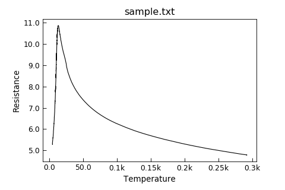

DefaultPlotStyle¶
-
class
Stoner.plot.formats.DefaultPlotStyle(*args, **kargs)[source]¶ Bases:
collections.abc.MutableMappingProduces a default plot style.
To produce alternative plot styles, create subclasses of this plot. Either override or create additional attributes to define rc Parameters (see Matplotlib documentation for available rc parameters) and override the :py:meth:Stoner.pot.formats.DefaultPlotStyle.customise` method to carry out additional plot formatting.
-
stylename¶ Name of the matplotlib style to use
- Type
string
- Example
"""Example plot using default style.""" import os.path as path from Stoner import Data, __home__ from Stoner.plot.formats import DefaultPlotStyle filename = path.realpath( path.join(__home__, "..", "doc", "samples", "sample.txt") ) d = Data(filename, setas="xy", template=DefaultPlotStyle) d.plot()

Attributes Summary
Horribly hacky method to traverse over the class heirarchy for style sheet names.
Methods Summary
__call__(**kargs)Call the template object can manipulate the rcParams that will be set.
annotate(ix, multiple, plot, **kargs)Call all the routines necessary to annotate the axes etc.
apply()Update matplotlib rc parameters from any attributes starting template_.
clear()Reset everything back o defaults.
Implement hook to customise plot.
customise_axes(ax, plot)Implement hook for for when we have an axis to manipulate.
new_figure([figure])Create a new figure.
update(*args, **kargs)Update the template with new attributes from keyword arguments.
Attributes Documentation
-
show_legend= True¶
-
show_title= True¶
-
show_xlabel= True¶
-
show_ylabel= True¶
-
show_zlabel= True¶
-
stylename= 'default'¶
-
stylesheet¶ Horribly hacky method to traverse over the class heirarchy for style sheet names.
-
subplot_settings= {'panels': {'title': (True, False, False), 'xlabel': (False, False, True), 'ylabel': (True, True, True), 'zlabel': (False, False, False)}, 'subplots': {'title': (True, True, True), 'xlabel': (True, True, True), 'ylabel': (True, True, True), 'zlabel': (False, False, False)}, 'y2': {'title': (True, False, False), 'xlabel': (True, False, False), 'ylabel': (True, True, True), 'zlabel': (False, False, False)}}¶
Methods Documentation
-
annotate(ix, multiple, plot, **kargs)[source]¶ Call all the routines necessary to annotate the axes etc.
- Parameters
ix (integer) – Index of current subplot
multiple (string) – how to handle multiple subplots
plot (Stoner.plot.PlotMixin) – The PlotMixin boject we’re working with
-
customise()[source]¶ Implement hook to customise plot.
This method is supplied for sub classes to override to provide additional plot customisation after the rc paramaters are updated from the class and instance attributes.
-
customise_axes(ax, plot)[source]¶ Implement hook for for when we have an axis to manipulate.
- Parameters
ax (matplotlib axes) – The axes to be modified by this function.
Note
In the DefaultPlotStyle class this method is used to set SI units plotting mode for all axes.
-

{kind=link}
{kind=link}